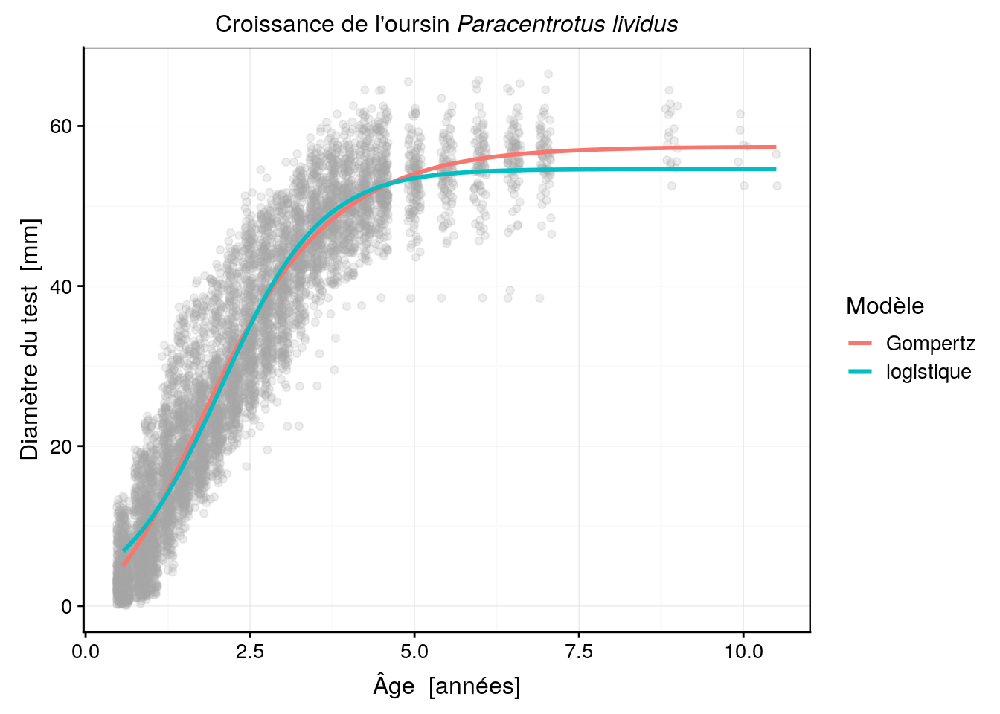
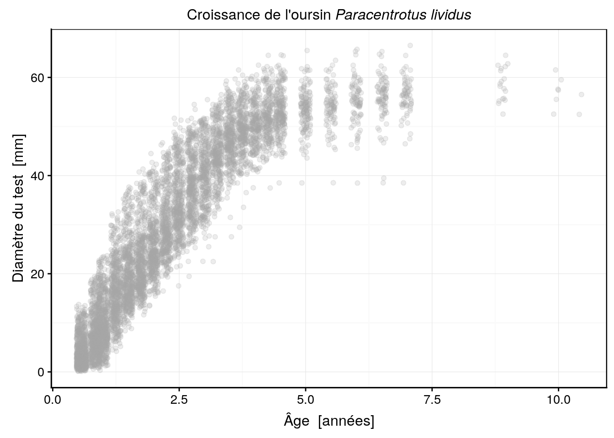
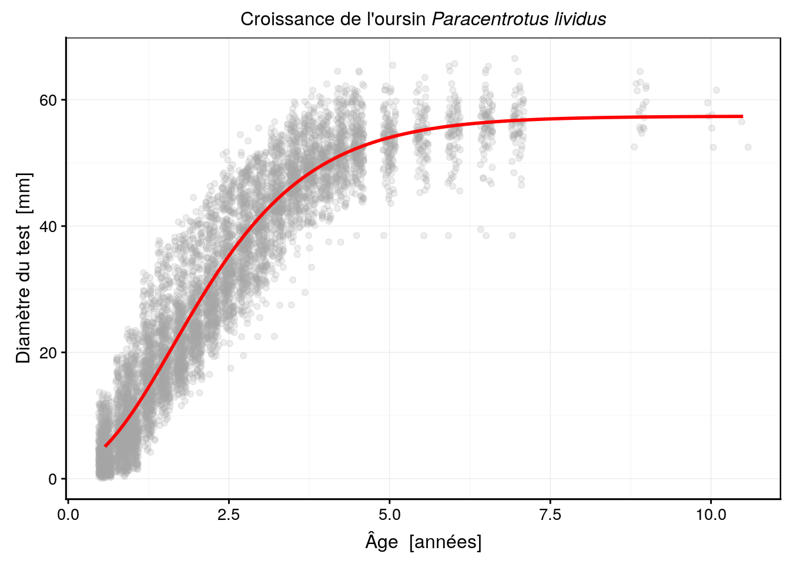
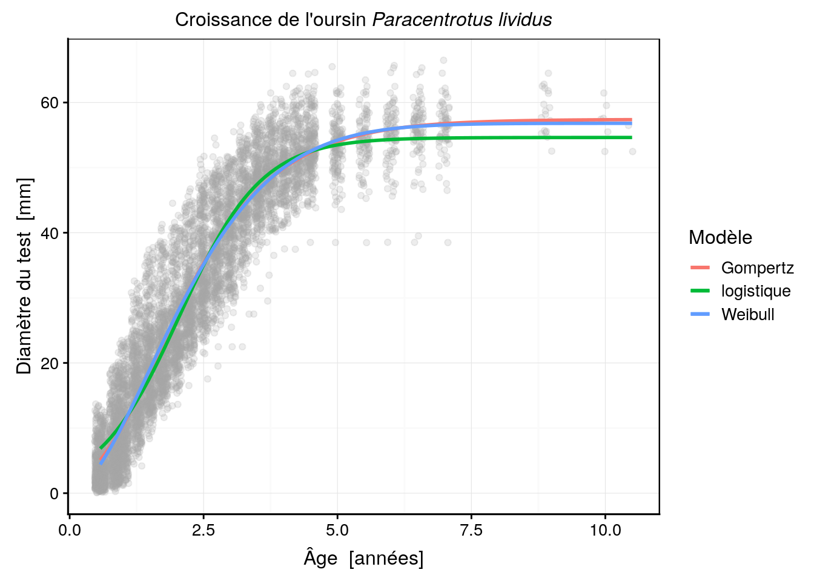
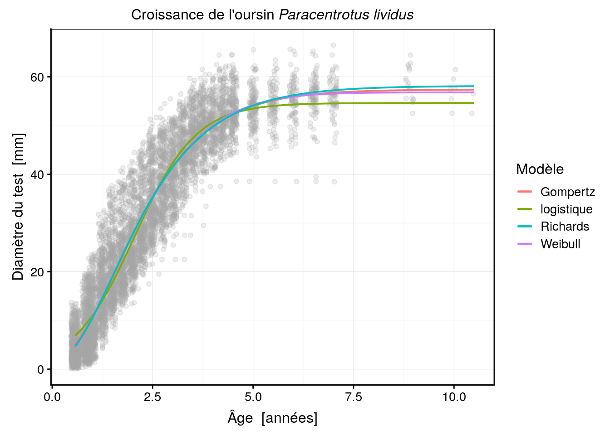

4.4 Choix du modèle
Le choix d’un modèle non linéaire fait intervenir des critères identiques à ceux d’un modèle linéaire (qualité d’ajustement évaluée par l’AIC, inspection visuelle de l’ajustement dans le nuage de points), mais il fait aussi intervenir une dimension supplémentaire : le choix de la fonction marthématique à ajuster. Comme nous venons de le voir au travers de quelques modèles courants en biologie, le nombre de fonctions mathématiques résultant en des formes similaire, par exemple de type sigmoïde, est grand. Ainsi, le choix de la meilleure fonction à utiliser dans un cas particulier est rendu plus difficile.
Nous allons illustrer l’ajustement d’une courbe non linéaire par le choix et l’ajustement d’un modèle de croissance dans un jeu de données en modélisant la croissance somatique de l’oursin Paracentrotus lividus (Grosjean 2001). Ce jeu de données est disponible dans le package data.io, sous le nom urchin_growth.
SciViews::R
urchins <- read("urchin_growth", package = "data.io", lang = "fr")
chart(data = urchins, diameter ~ age) +
geom_point()
Comme vous pouvez le voir, différents oursins ont été mesurés via le diamètre à l’ambitus du test (zone la plus large) en mm à différents âges (en années). Les mesures ont été effectuées tous les 3 à 6 mois pendant plus de 10 ans, ce qui donne un bon aperçu de la croissance de cet animal y compris la taille maximale asymptotique qui est atteinte vers les 4 à 5 ans (pour ce genre de modèle, il est très important de continuer à mesurer les animaux afin de bien quantifier cette taille maximale asymptotique). Ainsi, l’examen du graphique nous permet d’emblée de choisir un modèle à croissance finie (pas le modèle de Tanaka, donc), et de forme sigmoïdale. Les modèles logistique, Weibull ou Gompertz pourraient convenir par exemple. Nous pouvons à ce stade, essayer différents modèles et choisir celui qui nous semble le plus adapté.
Le choix du meilleur modèle se fait grâce à deux critères :
Les connaissances théoriques et a priori du modèle que l’on ajuste. En effet, il n’existe qu’un seul modèle linéaire, mais une infinité de modèles curvilinéaires qui peuvent s’ajuster dans les données. Le choix du meilleur modèle se fait en fonction de considérations sur le phénomène sous-jacent qui doivent se refléter dans les propriétés mathématiques de la courbe choisie. Par exemple, si on sait que la croissance est asymptotique vers une taille maximale, nous devrons choisir une courbe mathématique qui présente une asymptote horizontale à son maximum pour représente au mieux le phénomène étudié.
Le coefficient de détermination \(R^2\) n’est pas calculé par R pour une régression non linéaire car sa validité est sujette à discussion entre les statisticiens (d’autres logiciels statistiques le calculent). Nous n’avons donc pas d’estimation de la qualité de l’ajustement par ce biais, comme dans le cas de la régression linéaire. Par contre, il est possible de calculer un autre critère plus fiable que nous avons déjà utilisé : le critère d’Akaïke (fonction
AIC()dans R). Ce critère tient compte à la fois de la qualité d’ajustement et de la complexité du modèle, exprimée par le nombre de paramètres qu’il faut estimer. Plus le modèle est complexe, plus on peut s’attendre à ce qu’il s’ajuste bien aux données car il est plus flexible. Cependant, en ce domaine, la complexité n’est pas forcément un gage de qualité. On recherche plutôt un compromis entre meilleur ajustement et simplicité. Le critère d’information d’Akaiké quantifie précisément ce compromis, c’est-à-dire que le modèle qui a un AIC le plus faible est considéré comme le meilleur. Appliquons donc ce concept pour sélectionner le meilleur modèle de croissance pour décrire la croissance somatique de nos oursins après avoir sélectionné les modèles candidats les plus judicieux (modèle sigmoïdal avec asymptote horizontale au maximum).
Notons toutefois que, comme les animaux sont mesurés aux mêmes âges, tous les 3 à 6 mois, certains points se superposent. Afin d’afficher tous les points, il est utile d’utiliser la fonction geom_jitter() à la place de geom_point() qui décale les points d’une valeur aléatoire pour éviter ces superpositions (l’argument width = indique le décalage maximum à appliquer). Voici ce que cela donne (en ajoutant également un titre avec formattage correct du nom en latin) :
urchins_plot <- chart(data = urchins, diameter ~ age) +
geom_jitter(width = 0.1, alpha = 0.2, color = "darkgrey") +
ggtitle(expression(paste("Croissance de l'oursin ", italic("Paracentrotus lividus"))))
urchins_plot
Nous avons ici également représenté les points de manière semi-transparente avec alpha = 0.2(transparence de 20%) pour encore mieux mettre en évidence les points de mesures qui se superposent.
Ajustons maintenant un modèle de Gompertz (modèle ‘SelfStart’) :
urchins_gomp <- nls(data = urchins, diameter ~ SSgompertz(age, Asym, b2, b3))
summary(urchins_gomp)#
# Formula: diameter ~ SSgompertz(age, Asym, b2, b3)
#
# Parameters:
# Estimate Std. Error t value Pr(>|t|)
# Asym 57.403687 0.257588 222.85 <2e-16 ***
# b2 3.901916 0.046354 84.18 <2e-16 ***
# b3 0.434744 0.003852 112.86 <2e-16 ***
# ---
# Signif. codes: 0 '***' 0.001 '**' 0.01 '*' 0.05 '.' 0.1 ' ' 1
#
# Residual standard error: 5.49 on 7021 degrees of freedom
#
# Number of iterations to convergence: 3
# Achieved convergence tolerance: 2.655e-06Utilisons maintenant notre fonction as.function.nls() pour ajouter la courbe sur le graphique.
as.function.nls <- function(x, ...) {
nls_model <- x
name_x <- names(nls_model$dataClasses)
stopifnot(length(name_x) == 1)
function(x) predict(nls_model, newdata = structure(list(x), names = name_x))
}A présent, nous pouvons faire ceci :
urchins_plot +
stat_function(fun = as.function(urchins_gomp), color = "red", size = 1)
L’ajustement de cette fonction semble très bon, à l’oeil. Voyons ce qu’il en est d’autres modèles. Par exemple, une courbe logistique :
urchins_logis <- nls(data = urchins, diameter ~ SSlogis(age, Asym, xmid, scal))
summary(urchins_logis)#
# Formula: diameter ~ SSlogis(age, Asym, xmid, scal)
#
# Parameters:
# Estimate Std. Error t value Pr(>|t|)
# Asym 54.628069 0.202985 269.1 <2e-16 ***
# xmid 2.055285 0.009568 214.8 <2e-16 ***
# scal 0.764830 0.007355 104.0 <2e-16 ***
# ---
# Signif. codes: 0 '***' 0.001 '**' 0.01 '*' 0.05 '.' 0.1 ' ' 1
#
# Residual standard error: 5.6 on 7021 degrees of freedom
#
# Number of iterations to convergence: 4
# Achieved convergence tolerance: 1.079e-06Et voici le graphique avec les deux modèles superposés :
urchins_plot +
stat_function(fun = as.function(urchins_gomp), aes(color = "Gompertz"), size = 1) +
stat_function(fun = as.function(urchins_logis), aes(color = "logistique"), size = 1) +
labs(color = "Modèle")
Notez que ici, la couleur a été incluse dans le “mapping” (argument mapping =) de stat_function() en l’incluant dans aes(). Cela change fondamentalement la façon dont la couleur est perçue par ggplot2. Dans ce cas-ci, la valeur est interprétée non comme une couleur à proprement parler, mais comme un niveau (une couche) à inclure dans le graphique et à reporter via une légende. Ensuite, à l’aide de labs() on change le titre de la légende relatif à la couleur par un nom plus explicite : “Modèle”.
Nous pouvons comparer ces modèles à l’aide du critère d’Akaïke.
AIC(urchins_gomp, urchins_logis)# df AIC
# urchins_gomp 4 43861.73
# urchins_logis 4 44139.13Comme on peut le voir clairement sur le graphe, la courbe logistique donne une autre solution, cette dernière est à peine moins bonne que le modèle de Gompertz, selon le critère d’Akaiké. Pourtant, la courbe est assez bien démarquée de celle de Gompertz. Essayons maintenant un modèle de Weibull. Ce modèle est plus complexe car il a quatre paramètres au lieu de trois pour les deux modèles précédents :
urchins_weib <- nls(data = urchins, diameter ~ SSweibull(age, Asym, Drop, lrc, pwr))
summary(urchins_weib)#
# Formula: diameter ~ SSweibull(age, Asym, Drop, lrc, pwr)
#
# Parameters:
# Estimate Std. Error t value Pr(>|t|)
# Asym 56.80491 0.32704 173.69 <2e-16 ***
# Drop 56.81320 0.59393 95.66 <2e-16 ***
# lrc -1.57392 0.02865 -54.94 <2e-16 ***
# pwr 1.67880 0.02960 56.72 <2e-16 ***
# ---
# Signif. codes: 0 '***' 0.001 '**' 0.01 '*' 0.05 '.' 0.1 ' ' 1
#
# Residual standard error: 5.47 on 7020 degrees of freedom
#
# Number of iterations to convergence: 3
# Achieved convergence tolerance: 2.532e-06Ajoutons ce nouveau modèle sur le graphique :
urchins_plot +
stat_function(fun = as.function(urchins_gomp), aes(color = "Gompertz"), size = 1) +
stat_function(fun = as.function(urchins_logis), aes(color = "logistique"), size = 1) +
stat_function(fun = as.function(urchins_weib), aes(color = "Weibull"), size = 1) +
labs(color = "Modèle")
… et comparons à l’aide du critère d’Akaïke :
AIC(urchins_gomp, urchins_logis, urchins_weib)# df AIC
# urchins_gomp 4 43861.73
# urchins_logis 4 44139.13
# urchins_weib 5 43810.72Ce modèle fait presque jeu égal avec le modèle de Gompertz en terme de critère d’Akaiké ; juste un tout petit peu mieux. En fait, les deux courbes sont pratiquement superposées l’une à l’autre, mais le modèle de Weibull à un démarrage de croissance plus lent au début, ce qui se reflète dans les données. Par contre, il est pénalisé par le fait que c’est un modèle plus complexe qui possède un paramètre de plus. L’un dans l’autre, le critère d’information d’Akaiké considère donc les deux modèles sur pratiquement sur le même plan du point de vue de la qualité de leurs ajustements respectifs.
A ce stade, nous voudrions également essayer un autre modèle flexible à quatre paramètres : le modèle de Richards. Malheureusement, il n’existe pas de fonction ‘SelfStart’ dans R pour ce modèle. Nous sommes donc réduit “à mettre les mains dans le cambouis”, à définir la fonction nous même, à trouver de bonnes valeurs de départ, etc. Voici comment définir la fonction :
richards <- function(x, Asym, lrc, c0, m) Asym*(1 - exp(-exp(lrc) * (x - c0)))^mPour les valeurs de départ, là ce n’est pas facile. Asym est l’ asymptote horizontale à la taille maximum. On voit qu’elle se situe aux environ de 55 mm sur le graphique. Pour les autres paramètres, c’est plus difficile à évaluer. Prenons par exemple 1 comme valeur de départ pour les trois autres paramètres, ce qui donne (les valeurs de départ sont obligatoires ici puisque ce n’est pas un modèle ‘SelfStart’) :
urchins_rich <- nls(data = urchins, diameter ~ richards(age, Asym, lrc, c0, m),
start = c(Asym = 55, lrc = 0.1, c0 = 1, m = 1))# Error in numericDeriv(form[[3L]], names(ind), env): Missing value or an infinity produced when evaluating the model… et voilà ! Un excellent exemple de plantage de l’algorithme de minimisation de la fonction objective suite à un comportement inadéquat de la fonction avec les valeurs testées. Ici, la fonction renvoie l’infini et l’algorithme ne peut donc effectuer la minimisation. La fonction de Richards est effectivement connue pour être difficile à ajuster pour cette raison.
Il nous faut donc soit tester d’autres valeurs de départ, soit utiliser un autre algorithme de minimisation, soit les deux. Après différents essais il apparaît que le changement des valeurs de départ suffit dans le cas présent :
urchins_rich <- nls(data = urchins, diameter ~ richards(age, Asym, lrc, c0, m),
start = c(Asym = 55, lrc = -0.7, c0 = 0, m = 1))
summary(urchins_rich)#
# Formula: diameter ~ richards(age, Asym, lrc, c0, m)
#
# Parameters:
# Estimate Std. Error t value Pr(>|t|)
# Asym 58.14348 0.37772 153.934 < 2e-16 ***
# lrc -0.27595 0.03152 -8.754 < 2e-16 ***
# c0 -0.87545 0.28464 -3.076 0.002109 **
# m 6.20711 1.82345 3.404 0.000668 ***
# ---
# Signif. codes: 0 '***' 0.001 '**' 0.01 '*' 0.05 '.' 0.1 ' ' 1
#
# Residual standard error: 5.487 on 7020 degrees of freedom
#
# Number of iterations to convergence: 11
# Achieved convergence tolerance: 7.11e-06Ajoutons ce dernière modèle sur notre graphique (avec des traits un peu plus fins pour mieux distinguer les modèles les uns des autres) :
urchins_plot +
stat_function(fun = as.function(urchins_gomp), aes(color = "Gompertz"), size = 0.7) +
stat_function(fun = as.function(urchins_logis), aes(color = "logistique"), size = 0.7) +
stat_function(fun = as.function(urchins_weib), aes(color = "Weibull"), size = 0.7) +
stat_function(fun = as.function(urchins_rich), aes(color = "Richards"), size = 0.7) +
labs(color = "Modèle")
… et comparons à l’aide du critère d’Akaïke :
AIC(urchins_gomp, urchins_logis, urchins_weib, urchins_rich)# df AIC
# urchins_gomp 4 43861.73
# urchins_logis 4 44139.13
# urchins_weib 5 43810.72
# urchins_rich 5 43854.53La courbe est très proche des modèles de Gompertz et Weibull aux jeunes âges, mais l’asymptote maximale est légèrement plus haute que pour les deux autres modèles (58 mm au lieu de 57 mm). Les trois courbes sont très, très proches l’une de l’autre. Le critère d’information d’Akaiké est marginalement moins bon pour le modèle de Richards que pour celui de Weibull, mais est tout juste meilleur que celui de Gompertz. En outre l’écart type pour le paramètre x0 est plus conséquent en comparaison de sa valeur, ce qui démontre une certaine instabilité de la fonction par rapport à ce paramètre, et par conséquent, une incertitude dans son estimation. Pour cette raison, det pour la difficulté à l’ajuster, le modèle de Richards sera écarté dans notre cas au benefice du modèle de Weibull, voire de celui de Gompertz plus simple.
Le choix final entre Gompertz ou Weibull dépend de l’usage que l’on veut faire du modèle. Si la simplicité du modèle est primordiale, nous garderons Gompertz. Si la croissance des petits oursins est un aspect important de l’analyse, nous garderons Weibull qui semble mieux s’ajuster aux données à ce niveau.
A vous de jouer !
- Réalisez un cahier de laboratoire sur la croissance de bactérie en définissant un modèle non linéaire pertinent pour ces données.
Vous avez à votre disposition une assignation GitHub Classroom :
Lisez le README afin de prendre connaissance de l’exercice
Références
Grosjean, Philippe. 2001. “Growth Model of the Reared Sea Urchin Paracentrotus Lividus (Lamarck, 1816).” PhD thesis, ULB. http://go.sciviews.org/thesis_PhG.